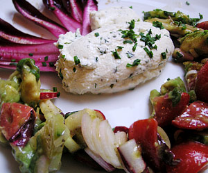

Selbstgemachter Basilikum-Mozarella
5,5 von 6250 g joguhrt, 2,5 dl rahm und 1 kl zitronensaft mischen. 1 liter milch aufkochen unter rühren die joguhrt/rahm mischung dazugeben. nochmal aufkochen, sobald es scheidet durch ein mulltuch abtropfen lassen. salz pfeffer und kräuter nach wahl dazugeben. schön formen.
